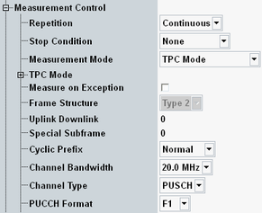
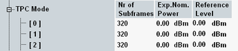

This section describes the following "Measurement Control" settings.

Defines how often the measurement is repeated if it is not stopped explicitly or by a failed limit check.
- Continuous: The measurement is continued until it is explicitly terminated. The results are periodically updated.
- Single-Shot: The measurement is stopped after one statistics cycle.
Single-shot is preferable if only a single measurement result is required under fixed conditions, which is typical for remote-controlled measurements. Continuous mode is suitable for monitoring the evolution of the measurement results in time and observe how they depend on the measurement configuration, which is typically done in manual control. The reset/preset values therefore differ from each other.
- "None": The measurement is performed according to its "Repetition" mode and "Statistic Count", irrespective of the limit check results.
- "On Limit Failure": The measurement is stopped when one of the limits is exceeded, irrespective of the repetition mode set. If no limit failure occurs, it is performed according to its "Repetition" mode and "Statistic Count". Use this setting for measurements that are intended for checking limits, e.g. production tests.
Selects/displays the measurement mode.
- "Normal":
In normal mode, the measurement uses a constant reference level for the entire measurement duration.
Use the normal mode for the standalone scenario. For the other scenarios, the normal mode is only suitable, if the controlling application does not modify the reference level during the measurement. - "TPC Mode":
In TPC mode, the measurement configures the reference level once per subframe. In the combined signal path scenario, the reference level is controlled by the signaling application. In the standalone scenario, the reference levels to be used must be configured, see parameter "TPC Mode".
The TPC mode has been designed for TPC measurements where the UE power is ramped up or down over a wide range, exceeding the dynamic range of the measurement. A typical example is a conformance test case according to 3GPP TS 36.521, section 6.3.5.2 "Power Control Relative power tolerance".
Note that for spectrum measurements the normal mode is recommended. For channel bandwidths > 10 MHz, spectrum measurements are not supported in TPC mode. - "Multi Eval List Mode":
The list mode can only be enabled via remote control command. When it has been enabled, "Multi Eval List Mode" is displayed as measurement mode. You can disable it by selecting one of the other modes.
For an introduction to the list mode, see "List Mode".
Option R&S CMW-KM012 is required.
While the combined signal path scenario is active, this parameter is not configurable.
Remote command:This node configures a sequence of expected nominal power values to be applied during a measurement in TPC mode, using the standalone scenario. It is only visible, if the measurement mode "TPC Mode" is selected.
For each list entry, you can configure the number of subframes and the expected nominal power applicable to these subframes. The resulting reference level is calculated and displayed for information. The first entry is coupled to the standard expected nominal power setting, see "Expected Nominal Power".

The list defines the expected nominal powers to be applied within one sequence of measured subframes, configured via parameter "Measurement Subframe" > "No. of Subframes".
- Configured "No. of Subframes" = 30, to be measured two times (defined via statistic count)
- List entry 0 = 10 subframes, 0 dBm
List entry 1 = 15 subframes, 10 dBm
List entry 2 = 10 subframes, 20 dBm - Resulting used expected nominal power:
Measured subframe 1 to 10: entry 0, 0 dBm
Measured subframe 11 to 25: entry 1, 10 dBm
Measured subframe 26 to 30: entry 2, 20 dBm
second measurement of 30 subframes: again entry 0 to 2 are applied
If the configured number of subframes to be measured is longer than the sequence defined via the list entries, the last list entry is used for the remaining subframes.
Note: Between two list entries, the R&S CMW reconfigures the reference level according to the next entry. This action can impair the accuracy of measurement results for the preceding and the subsequent subframe. Keep this effect in mind when configuring the measurement and evaluating the results. Do not reconfigure the reference level directly before/after the "Measure Subframe".
Specifies whether measurement results that the R&S CMW identifies as faulty or inaccurate are rejected. A faulty result occurs, for example, when an overload is detected. In remote control, the cause of the error is indicated by the "reliability indicator".
- Off: Faulty results are rejected. The measurement is continued. The statistical counters are not reset. Use this mode to ensure that a single faulty result does not affect the entire measurement.
- On: Results are never rejected. Use this mode for development purposes, if you want to analyze the reason for occasional wrong transmissions.
Displays the frame structure of the uplink signal as defined in 3GPP TS 36.211. The value is set implicitly via the "eMTC" ("Type 1" = FDD, "Type 2" = TDD).
For a TDD signal, the additional parameters "Uplink Downlink" and "Special Subframe" have to be set to specify the frame structure.
Remote command:Uplink-downlink configuration of a TDD signal, as defined in 3GPP TS 36.211, chapter 4, "Frame Structure". Each configuration defines a combination of uplink subframes, downlink subframes and special subframes within a radio frame. The selected configuration is visualized in the "RB Allocation Table".
In the standalone (SA) scenario, this parameter is controlled by the measurement. In the combined signal path (CSP) scenario, it is controlled by the signaling application.
Configuration of the special subframes of a TDD signal, as defined in 3GPP TS 36.211, chapter 4, "Frame Structure". Each configuration defines the inner structure of a special subframe, i.e. the lengths of DwPTS, GP and UpPTS.
In the standalone (SA) scenario, this parameter is controlled by the measurement. In the combined signal path (CSP) scenario, it is controlled by the signaling application.
Normal or extended cyclic prefix. Set this parameter in accordance with the cyclic prefix of the measured LTE signal. The number of measured data symbols is 7 (6) for normal (extended) cyclic prefix duration.
In the standalone (SA) scenario, this parameter is controlled by the measurement. In the combined signal path (CSP) scenario, it is controlled by the signaling application.
Channel bandwidth in the range 1.4 MHz to 20 MHz. Set the bandwidth in accordance with the measured LTE signal.
To configure the channel bandwidth for carrier aggregation, see "Carrier Aggregation Settings".
The parameter is a common measurement setting, i.e. it has the same value in all measurements (e.g. PRACH measurement and multi-evaluation measurement).
In the standalone (SA) scenario, this parameter is controlled by the measurement. In the combined signal path (CSP) scenario, it is controlled by the signaling application.
Configures the channel type detection for the measured subframe of the measured carrier. With carrier aggregation, the measured carrier is the configured "Measurement Carrier".
- AUTO: The channel type is detected automatically. Within the PUCCH region, it can be PUCCH or PUSCH. Outside of the PUCCH region, PUSCH is always assumed.
Not supported for eMTC. - PUSCH: The measured subframe contains only PUSCH.
- PUCCH: The measured subframe contains only PUCCH.
To verify detected channel types, you can use the RB allocation table, see "View RB Allocation Table".
Remote command:Specifies the format of the PUCCH. With carrier aggregation, only the PUCCH of the "Measurement Carrier" is relevant.
If your signal contains a PUCCH, adjust this value to ensure that the R&S CMW can synchronize to the signal and perform channel estimation.
All PUCCH contained in the measured carrier must have the same format. The PUCCH formats are defined in 3GPP TS 36.211.
Remote command: